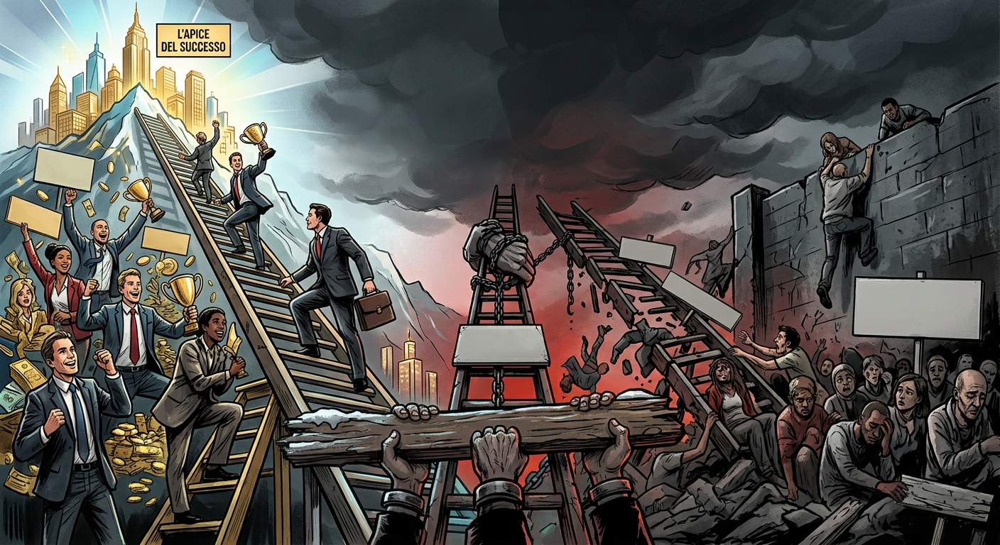

Dime tú qué necesitamos
Cuando para trabajar uno tiene que convertirse en diseñador de su propio puesto, vendedor de sí mismo y buscador de patrocinadores

Siempre he sido de las personas que trabajan mejor en un entorno solidario que en uno competitivo. La competencia me genera ansiedad y, a menudo, me parece que ni siquiera conduce a grandes cosas. Utilizo la dicotomía entre solidaridad y competencia como una simplificación: sé perfectamente que, en el mundo real, ambas suelen coexistir. Lo que me llama la atención es la proporción entre ellas, que en los últimos años parece inclinarse cada vez más hacia un solo lado.
Os pongo un ejemplo. Últimamente veo ofertas de trabajo cada vez más orientadas a competir. Y no me refiero solo a que haya muchísimos candidatos para un único puesto: me refiero a anuncios en los que te ofrecen un trabajo, pero el trabajo no existe; tienes que inventártelo tú. Por ejemplo (no daré nombres, pero es una historia real): «Buscamos a una persona para dirigir un proyecto». Después lees la descripción completa y descubres que el proyecto (aún) no existe. El candidato debe proponer un proyecto relacionado con la misión de la organización, sobre un tema de interés estratégico para el futuro, y presentar un plan detallado que describa cómo se llevaría a cabo el trabajo, qué financiación se necesitaría en cada año y qué resultados se esperan. A veces también se exige que tenga un «patrocinador» interno: es decir, que convenza al responsable de uno de los departamentos para que escriba una carta recomendándolo y expresando su apoyo.
Es decir, paremos un momento: yo tendría que ponerme en contacto con el responsable de un departamento de una empresa (o de un centro de investigación, o de una universidad) y decirle: «Oye, ¿sabes qué? Necesitas a alguien que haga este trabajo, de esta manera y con estos resultados. Quiero hacerlo yo, así que escríbeme una carta de recomendación».
…¿Soy la única a la que esto le resulta incómodo?
La lógica se entiende: autonomía, libertad, proyectos elegidos por su relevancia. Sin embargo, me pregunto qué selecciona realmente un mecanismo así. Qué tipo de persona gana. Y, sobre todo, qué tipo de persona pierde.
No creo que haya que abolir la competición. Está muy bien que alguien con una idea interesante e innovadora pueda proponerla y conseguir el espacio y la financiación necesarios para desarrollarla. Pero para eso existen las convocatorias europeas, los programas de financiación ministeriales y mecanismos similares. Convertir esto en una oferta de trabajo de una organización que contrata a alguien para realizar una tarea y luego le pide que explique cuál debe ser la estrategia y qué hay que hacer me parece la expresión perfecta de un mundo en el que toda la responsabilidad recae sobre el individuo: ¿no encuentras trabajo? Tienes que esforzarte más, venderte mejor, etcétera (he hablado de ello aquí).
Este mecanismo no nació con estos anuncios. El sociólogo Richard Sennett, en La corrosión del carácter (The Corrosion of Character en inglés), ya describía a finales de los años noventa cómo el trabajo flexible y organizado por proyectos podía erosionar aquello que mantiene unidas a las personas a lo largo del tiempo. Cuando todo es provisional, resulta más difícil construir relaciones duraderas y aprender a contar los unos con los otros.
El filósofo Michael Sandel, en La tiranía del mérito (The Tyranny of Merit), añade otra pieza al rompecabezas. En una sociedad que premia el mérito individual, quienes tienen éxito tienden a pensar que se lo deben todo a sí mismos, mientras que quienes no lo consiguen tienden a sentirse los únicos responsables de su fracaso. Si tienes que construirte el puesto tú solo, el éxito es mérito tuyo y el fracaso es culpa tuya. Queda poco espacio para reconocer que nadie llega a ninguna parte sin los demás.
Una cosa es merecer una oportunidad laboral; otra muy distinta es tener que crear por tu cuenta la oportunidad que debería ofrecerte una institución.
Me gustaría vivir en un mundo en el que se pudiera trabajar sin competir constantemente por ser el mejor (los demás también tendrán que trabajar, ¿no? Me refiero a todos los que no son el número uno), en el que no fuera necesario pisotear a alguien para conseguir un sueldo y en el que el empleador tuviera al menos una idea del problema que quiere resolver, en lugar de pedirle a la persona recién contratada que también se invente el problema.
¿Pido demasiado? ¿Qué pensáis? ¿Se puede construir un mundo así? ¿Y cómo?